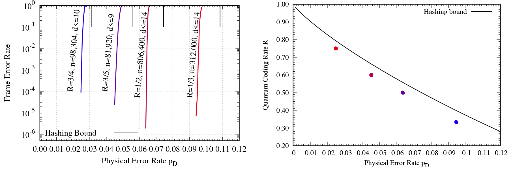

- Associate Professor, Department of Information and Communications Engineering, Institute of Science Tokyo
- Research Interests: Quantum Error Correction, Coding Theory, Information Theory
Follow me on X
To realize useful quantum computation, it is essential to build a large number of reliable logical qubits. However, the current level of quantum computers is such that even with thousands of physical qubits, only a few tens of logical qubits can be obtained. While this limitation partly stems from engineering constraints such as device implementation and stability, even under an idealized setting of coding theory for quantum error correction, there remain fundamental challenges in code design itself.
Quantum Low-Density Parity-Check (LDPC) codes combined with low-complexity Belief Propagation (BP) decoding have long been regarded as a promising approach. Nevertheless, the following issues have persisted:
To date, no quantum error correction scheme has simultaneously overcome all of these obstacles.
By contrast, the field of classical error correction has already reached maturity. For instance, in mobile communications, LDPC codes have been adopted in the 5G standard, forming the backbone of real-world communication infrastructure. On personal computers as well, large-scale simulations with blocklengths up to \(10^7\) bits are feasible. While classical communication has achieved practical deployment of ultra-large-scale coding, quantum error correction codes are still far from reaching an equivalent level.
We pursue two complementary lines of research in quantum error correction with LDPC codes: binary LDPC-based quantum codes and non-binary LDPC-based quantum codes. Both aim at scalable constructions and practical decoding while pushing performance toward fundamental limits.
In Breaking the Orthogonality Barrier in Quantum LDPC Codes , we focus on the orthogonality constraints between X/Z parity-check matrices, which tend to introduce short cycles and limit code distance and decoding performance. We control the commutativity of permutation matrices and restrict orthogonality constraints to the “active” part of the construction, while preserving a regular sparse structure. This yields explicit CSS LDPC codes with large girth, avoiding short cycles in the Tanner graph.
As a concrete demonstration, we construct a girth-8, \((3,12)\)-regular \([[9216,4612, \leq 48]]\) CSS LDPC code and evaluate it under BP decoding combined with low-complexity post-processing on the depolarizing channel. The results show FER \(10^{-8}\) at \(p=4\%\), and density-evolution analysis estimates the decoding threshold at \(p=0.05702\).
In our npj Quantum Information paper , we develop non-binary LDPC-CSS constructions and decoding methods that leverage larger field alphabets. The goal is to achieve strong finite-length performance with practical decoding complexity, especially in the low-FER (error-floor) regime relevant to reliable quantum information processing.
Our decoding approach incorporates belief-propagation variants adapted to non-binary structures and explores post-processing strategies that account for degeneracy. The study reports performance close to the hashing bound under practical decoding, highlighting the promise of non-binary LDPC codes for scalable quantum error correction.

The software used in our recent publication (npj Quantum Information, also available at arXiv:2506.15636) has now been released on GitHub: https://github.com/kasaikenta/gd-css-decoder. It implements joint and degeneracy-aware belief propagation decoding for quantum error correction based on non-binary LDPC codes.
The parity-check matrix data used in the paper is now available here: https://kasaikenta.github.io/2506.15636.code.tar.gz
The parity-check matrix data for our earlier work (arXiv:2504.17790) is also available here: https://kasaikenta.github.io/2504.17790.code.tar.gz
Demos for our preprint "Breaking the Orthogonality Barrier in Quantum LDPC Codes" (arXiv:2601.08824) are available on GitHub:
In the prefix_value files, the numbers 1, 2, ..., 255
represent \(\alpha^{0}, \alpha^{1}, \ldots, \alpha^{254}\) for a primitive element \(\alpha\).
The primitive polynomial can be found in the respective paper.
For other software or data related to the paper, please feel free to contact us.
A: The commutativity condition \(H_X H_Z^{T} = 0\) is essential, but enforcing it directly at the level of sparse regular binary parity-check matrices severely restricts edge placements. This tends to introduce many short cycles (especially 4- and 6-cycles), which reduces girth and hurts distance and BP performance. In our framework, the construction uses latent matrices that provide design freedom together with parent matrices, and orthogonality is enforced only on the active matrices (not on the parent matrices themselves). By controlling commutativity on the active part, we retain regularity while avoiding short cycles and achieving larger girth.
A: This is a very reasonable concern. At very long block lengths, it is often difficult to obtain solid lower bounds, and relying only on upper bounds can make it hard to judge how much the construction helps. Shorter instances would make it easier to compute convincing lower bounds and verify whether the distance is genuinely improved.
The latest arXiv version includes a brief discussion of an idea to relax some construction constraints to target shorter block lengths while aiming to keep girth 8 and (hopefully) minimum distance 48: arXiv:2601.08824.
A: Avoiding only 4-cycles is not sufficient to unlock strong BP performance, so we also eliminate 6-cycles. In generalized Hagiwara-Imai codes with column weight \(\ge 3\), 8-cycles cannot be avoided, so girth 8 is the practical target in our setting.
A: In density-evolution benchmarks, column weight 3 is the best-performing choice. Row weight 12 is the smallest value achievable by our proposed construction, so \((3,12)\)-regular is a natural design point.
A: We use belief propagation (BP) decoding with lightweight post-processing. In particular, we apply PP-flip and PP-OSD to correct residual trapping-cycle errors, improving the low-FER regime without heavy complexity.
A: The “\(\le 48\)” indicates an upper bound on the minimum distance. This bound is derived from a potential (latent) matrix associated with the construction. Obtaining convincing lower bounds—especially at very long block lengths—is challenging and is a key motivation for exploring shorter instances.
A: Density evolution tracks the message distributions of BP under the cycle-free (tree) assumption in the infinite-length limit. The threshold is the crossover point where BP transitions from successful to unsuccessful decoding on average. It serves as an analytical benchmark, not a finite-length guarantee.
A: I am not exhaustively familiar with every previous construction, but from a performance perspective, our approach preserves sparse regular structure while controlling commutativity to achieve large girth, and it shows strong finite-length performance under BP with post-processing.
The construction cleverly exploits two well-known insights from classical coding theory: (i) non-binary LDPC codes with column weight two tend to perform especially well under iterative decoding, and (ii) column weight two allows flexible designs that can effectively eliminate short cycles in the Tanner graph.
By combining these properties with affine permutation matrix (APM) placements, the proposed codes achieve both orthogonality and large girth, which suppress error floors and enable sharp threshold-like performance. As a result, the quantum LDPC codes constructed in this way approach the hashing bound, even at practical blocklengths.
Indeed, classical binary LDPC codes with column weight 2 have a minimum distance that grows only logarithmically with respect to the code length, and their BP decoding threshold is significantly worse than that of column-3 codes. However, the situation is quite different for non-binary LDPC codes. When the code rate is high, the BP threshold of column-2 non-binary LDPC codes can approach the channel capacity, whereas that of column-3 codes becomes much poorer.
Moreover, non-binary extensions can substantially increase the minimum distance, leading to performance without observable error floors. As mentioned in the following Q&A, it is well known in classical coding theory that good BP decoding performance does not necessarily require the minimum distance to grow linearly with the code length.
The minimum distance of our codes does not grow linearly with blocklength. However, this does not prevent strong decoding performance under belief propagation (BP). From the theory of density evolution, it is well understood that what primarily determines BP performance are the column weight and row weight of the parity-check matrix, not the asymptotic growth of minimum distance.
Furthermore, it is known that classical LDPC codes with column weight three or larger typically have minimum distance that grows linearly with blocklength when constructed at random. This explains why researchers in LDPC coding theory tend not to emphasize minimum distance as the decisive factor: good iterative decoding performance can be achieved without relying on very large minimum distance.
While minimum distance is an important metric for characterizing the error-floor regime, achieving linearly growing minimum distance is not strictly necessary for excellent iterative decoding performance. This insight can be traced back to lessons from classical coding theory. During the 1980s and early 1990s, much of the community’s attention was directed toward the algebraic aspects of minimum-distance theory, and practical iterative methods received less focus. Consequently, the (re)discovery of turbo codes (1993) and LDPC codes (reintroduced in the mid-1990s, following Gallager’s original 1962 work) came somewhat later, even though their effectiveness derives not primarily from large minimum distance but from efficient iterative decoding and code structures that are well suited for BP.
The framework integrates four ingredients:
(i) Affine permutation matrix (APM) constructions to avoid short cycles,
(ii) joint belief propagation decoding over non-binary fields \(\mathbb{F}_q\),
(iii) optimization of minimum distance by carefully selecting matrix entries,
(iv) lightweight post-processing to remove residual errors.
Unlike conventional approaches that decode X and Z errors separately, our joint BP simultaneously estimates both, fully exploiting the CSS structure. Messages are richer because they are probability vectors over Fq rather than binary likelihoods, allowing more information to be exchanged during decoding. Residual trapping-cycle errors are corrected by local post-processing whose complexity is independent of code length.
The stabilizer weight is upper bounded by e × L, where e is the field extension degree and L is the row weight. For example, with e = 8 and L = 6, the stabilizer weight is at most 48, and crucially remains constant regardless of code length.
No. Although matrices are defined over \( \mathbb{F}_q \) and decoding operates over non-binary fields, the physical system is still qubits. Each element of \( \mathbb{F}_q \) is expanded into an \( e \times e \) binary companion matrix, ensuring the code remains a binary CSS code.
Our method generalizes the Hagiwara–Imai construction. Specifically, we place affine permutation matrices (APMs) at cyclically shifted positions within the parity-check matrices. By carefully choosing the shifts and the APM entries, the resulting non-binary matrices \( H_{\Gamma} \) and \( H_{\Delta} \) become orthogonal over \( \mathbb{F}_q \).
In other words, the inner product between any row of \( H_{\Gamma} \) and any row of \( H_{\Delta} \) cancels to zero in \( \mathbb{F}_q \). After expanding each field element into an \( e \times e \) binary companion matrix, we obtain binary parity-check matrices \( H_X \) and \( H_Z \) that satisfy \( H_X H_Z^{T} = 0 \). This approach ensures orthogonality while avoiding short cycles, leading to improved decoding performance.
Conventional quantum LDPC codes suffer from low coding rates, high error floors, lack of scalability, and heavy post-processing requirements. As a result, performance does not scale with blocklength and remains far from the hashing bound. Our work aims to construct codes with non-vanishing rate and efficient decoding that achieve performance close to the hashing bound.
Threshold phenomena and error-floor behavior become visible only at very large blocklengths. Demonstrating sharp threshold-like performance without error floors in this regime provides the strongest evidence of scalability. While short blocklengths also show good scaling, long blocklength results best highlight the theory.
No. The analysis assumes an idealized setting where all gate operations, stabilizer measurements, and recovery operations are error-free. The purpose is to isolate the coding-theoretic limitations apart from engineering constraints.
Decoding is judged by whether the difference between the true error and the estimated error belongs to the dual code. In other words, if \( (x + \hat{x}) \in C_X^{\perp} \) and \( (z + \hat{z}) \in C_Z^{\perp} \), then the decoding is considered successful, because both correspond to valid stabilizers and represent the same logical state.
If the difference vector is not in the dual, then the estimated error introduces a logical error and decoding is considered unsuccessful. Our framework also includes lightweight post-processing that can correct many failures by resolving small trapping-cycle structures.
In our framework, decoding success is not judged merely by reproducing the measured syndrome. Instead, the definition is stricter: the difference between the true error and the estimated error must belong to the dual code. In that case, the estimated error corresponds to a valid stabilizer and preserves the logical state, and only then is decoding counted as successful. If this condition is not met, the event is classified as a decoding failure since it introduces a logical error.
For further questions not covered here, please contact us directly via the Contact section below.
We have released a new preprint titled "Breaking the Orthogonality Barrier in Quantum LDPC Codes" on arXiv.
The paper focuses on the orthogonality barrier in quantum LDPC codes and presents a framework and constructions that overcome this constraint.
The paper titled "Quantum error correction near the coding theoretical bound", authored by Daiki Komoto and Kenta Kasai (Institute of Science Tokyo), has been published in npj Quantum Information.
This study proposes a new quantum error correction framework based on LDPC codes that achieves performance near the coding-theoretical (hashing) bound. The work demonstrates efficient decoding for hundreds of thousands of logical qubits, marking a major step toward scalable fault-tolerant quantum computation.
We have released a new preprint titled "Sharp Error-Rate Transitions in Quantum QC-LDPC Codes under Joint BP Decoding" on arXiv.
This work reports the first observation of steep error-rate “waterfall” transitions in quantum LDPC codes with non-vanishing coding rate using binary joint belief propagation decoding. This phenomenon was previously believed to require more complex decoding strategies.
The paper also investigates the cause of error floors, identifying trapping sets in the Tanner graph as key contributors. These insights enable the potential design of codes and decoders that both maintain steep thresholds and reduce the error floor, moving quantum error correction closer to practical deployment.
Our new preprint titled "Quantum Error Correction Exploiting Degeneracy to Approach the Hashing Bound" is now available on arXiv.
This work presents a decoding algorithm that explicitly exploits the degeneracy of quantum errors under the depolarizing channel. Using non-binary LDPC codes and syndrome-based methods, the proposed decoder achieves a frame error rate of $10^{-4}$ at a physical error rate of 9.45% with a code of 104,000 logical qubits and 312,000 physical qubits, approaching the quantum hashing bound.
The following paper and poster presentations have been accepted to ISTC 2025 (13th International Symposium on Topics in Coding), which will be held in Los Angeles, USA, in August 2025.
The regular paper presents a novel construction of quantum APM-LDPC codes using non-circulant affine permutation matrices, demonstrating the feasibility of girth-16 code design beyond the conventional constraints of quantum QC-LDPC codes. The poster presentations provide an overview of recent developments in quantum error correction using non-binary LDPC codes and future directions for high-girth code constructions.
Prof. Kenta Kasai will present his poster titled “Perspectives on Degeneracy and Structure in Non-Binary LDPC Code-Based QEC” at the ISIT 2025 workshop “Quantum Information – Open Problems, Impact, and Challenges (Q-PIC)”.
The workshop focuses on key challenges and open problems in quantum information science, and the poster highlights new perspectives on degeneracy and structural properties in quantum error correction based on non-binary LDPC codes.
The poster will be on display starting at 9:30 AM on June 24, 2025 (Tuesday) at the Rackham Graduate School, University of Michigan. Prof. Kasai will also deliver a 30-second pitch talk and be available for Q&A sessions.
For more details, please visit the Q-PIC workshop page.
Prof. Kenta Kasai will present his recent work titled “Follow-Up Study on Efficient Mitigation of Error Floors in Quantum Error Correction using Non-Binary LDPC Codes” at the Recent Results Poster Session of the IEEE International Symposium on Information Theory (ISIT) 2025.
The session will take place on Monday, June 23, 2025, from 14:30 to 15:50 at the ballroom of the Michigan League in Ann Arbor.
This follow-up study builds upon previously proposed techniques to mitigate error floors in quantum LDPC codes and evaluates their performance and practicality in greater depth.
The poster "Towards Practical Quantum Error Correction: Near-Optimal Performance and Floor Mitigation via Non-Binary LDPC Codes", authored by Kenta Kasai, has been accepted for presentation at the Quantum Error Correction (QEC25) conference.
This work addresses the suppression of error floors in quantum LDPC codes and demonstrates near-optimal performance using non-binary belief propagation decoding.
The acceptance rate for this year’s poster session was below 40%, making it a highly competitive venue for recent results in quantum error correction.
More details available on the QEC25 website.
The paper "Efficient Mitigation of Error Floors in Quantum Error Correction using Non-Binary Low-Density Parity-Check Codes", authored by Kenta Kasai, has been accepted for presentation at the IEEE International Symposium on Information Theory (ISIT 2025).
This paper presents decoding algorithms designed to mitigate the error floor in quantum LDPC codes constructed over non-binary fields, achieving performance close to the hashing bound under practical quantum noise models.
As a follow-up to this work, we will present new results in the Recent Results Poster Session at ISIT 2025, to be held in Ann Arbor, Michigan.
Preprint available on arXiv.
We welcome donations to support our educational and research activities. This program allows corporations, organizations, and individuals to make a donation to Science Tokyo with a designated faculty member as the project coordinator. Donations are used to promote education and research and are shared with society through achievements.
Tax incentives are available for donors. Please refer to the university's guidance for details.
How to apply / details: Donations for Education and Research
University contact: Management Group, Industrial Cooperation Division, Research Promotion Department,
Institute of Science Tokyo
E3-11, 2-12-1, Ookayama, Meguro-ku, Tokyo 152-8550
Tel: 03-5734-3816, Fax: 03-5734-2482
Mail: don.gra[at]cim.isct.ac.jp (replace [at] with @)
If my work aligns with your interests and you wish to invite me to an online seminar, I’m happy to adjust for time zones and can join at any time except 4:00–7:00 a.m. JST.
Email: kenta@ict.eng.isct.ac.jp
Office: Room 418, South Building 3, Ookayama Campus, Institute of Science Tokyo
2-12-1, Ookayama, Meguro-ku, Tokyo 152-8550, Japan